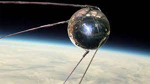

En su Origén
En su origen, el GPS fue diseñado en plena Guerra Fría, en la década de los años 60, básicamente para aplicaciones militares y de los servicios de inteligencia. Todo ello inspirándose en el lanzamiento de la nave espacial soviética Sputnik 1 en el año 1957
